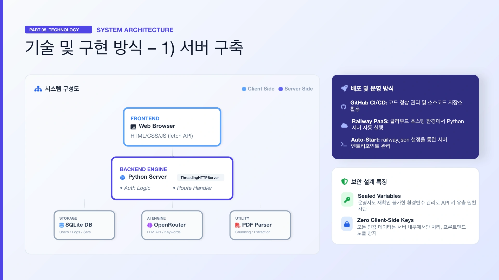
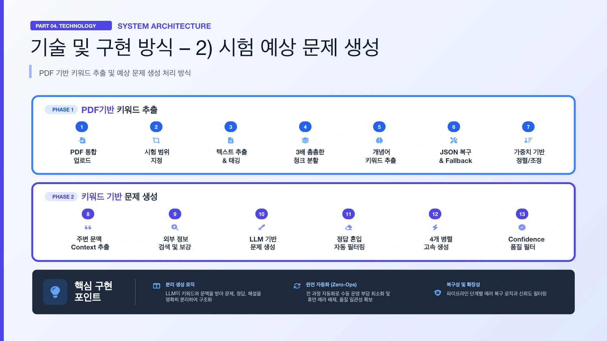

PROJECT 16 / 교육 · 학습 계획PROJECT 16 / Education · Study Planning
SmartStudy AI: 맞춤형 학습 전략 설계SmartStudy AI: Designing Personalized Study Strategies
회독 일정의 자동 재조정과 PDF 기반 예상문제 생성을 결합한 학습 도우미를 구현했습니다.Implemented a study assistant that combines automatic rescheduling of review passes with PDF-based practice question generation.
01 문제 상황 Problem
시험 준비에서는 무엇을 공부할지뿐 아니라 회독 간 시간을 나누고 밀린 계획을 다시 짜는 데도 에너지가 듭니다. 시험 일정과 학습 자료를 입력하면 계획·실행·연습문제가 이어지는 서비스를 목표로 했습니다.Exam preparation takes energy not only to decide what to study but also to divide time between review passes and reschedule plans that fall behind. The goal was a service where entering an exam schedule and study materials leads to a plan, execution, and practice questions.
02 사용 모델과 데이터 Models and Data
모델·기술Models · Techniques
- Python 규칙 기반 일정 알고리즘: 회독 구간과 공부 불가일을 반영하고 미수행 학습량을 재배분합니다.Python rule-based scheduling algorithm: accounts for review passes and unavailable days, and redistributes uncompleted study load.
- OpenRouter를 통한 LLM API: PDF의 핵심 개념과 예상문제·정답·해설을 생성합니다. 사용한 기반 모델 버전은 자료에 명확히 제시되지 않았습니다.LLM API via OpenRouter: generates key concepts from PDFs along with practice questions, answers, and explanations. The underlying model version used is not clearly stated in the materials.
데이터·입력Data · Inputs
- 시험 날짜, 과목, 학습 범위, 공부할 수 없는 날과 과제 수행 기록.Exam dates, subjects, study scope, unavailable days, and task completion records.
- 사용자가 올린 PDF의 지정 페이지, 키워드 주변 문맥 및 내용을 보완하는 공개 자료.Specified pages of the user's uploaded PDF, the context around keywords, and public materials that supplement the content.
03 구현 과정 Implementation
- 시험일까지의 가용 날짜를 회독·기출 연습·최종 정리 구간으로 배분하고 수행 상태에 따라 재조정합니다.Allocates the available days before the exam into review passes, past-exam practice, and final wrap-up phases, and readjusts based on completion status.
- PDF를 범위별로 추출·분할하고 핵심 키워드를 뽑아 중복을 합치고 중요도를 정렬합니다.PDFs are extracted and split by section, key keywords are pulled out, duplicates are merged, and items are ranked by importance.
- 키워드의 문맥으로 문제를 만들고 정답·해설은 분리 생성한 뒤, 형식 오류와 낮은 신뢰도 출력을 걸러 제공합니다.Questions are generated from the context of keywords, answers and explanations are generated separately, and outputs with format errors or low confidence are filtered out before delivery.


04 핵심 결과 Key Results
- 회독 계획, 캘린더, 미수행 일정 재조정, PDF 예상문제 생성의 주요 흐름을 구현했습니다.Implemented the main flows for review-cycle planning, a calendar, rescheduling of missed tasks, and PDF-based practice question generation.
- 자료 추출부터 문제 출력까지 세분화한 파이프라인에 JSON 응답 복구, 재시도, 병렬 처리와 수식 렌더링을 적용했습니다.A fine-grained pipeline from material extraction to question output was equipped with JSON response recovery, retries, parallel processing, and formula rendering.
05 한계와 발전 방향 Limitations and Next Steps
- 자료의 기술 스택·일부 기능 상태에 서로 다른 설명이 있어, 전체 기능의 상용 운영 완료로 해석하지 않았습니다.The materials give differing descriptions of the tech stack and the status of some features, so they were not interpreted as all features being fully in production.
- 생성 문제의 정답률이나 학습 성적 개선을 검증한 수치가 없습니다. 모델이 부여한 신뢰도 역시 실제 정답 보증은 아닙니다.There are no figures verifying the accuracy of the generated questions or improvements in academic performance. The confidence scores assigned by the model do not guarantee correct answers either.
자료: 최종보고서 및 발표자료. 제출 자료를 바탕으로 정리했으며, 결과는 해당 프로젝트의 구현·실험 범위에 해당합니다.Source: final report and presentation slides. Summarized from the submitted materials; results reflect the scope of the project's implementation and experiments.